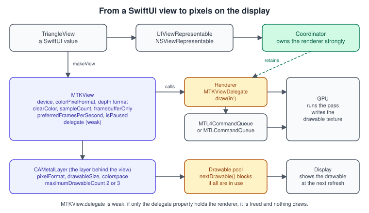
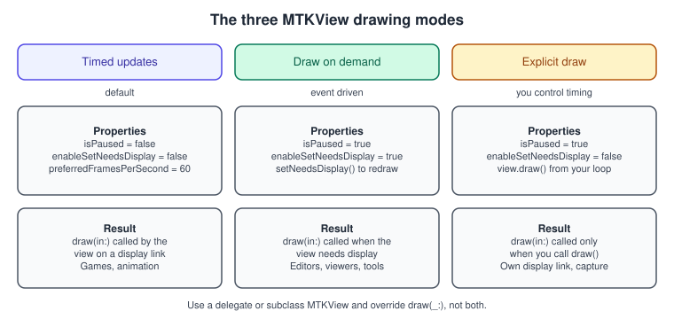
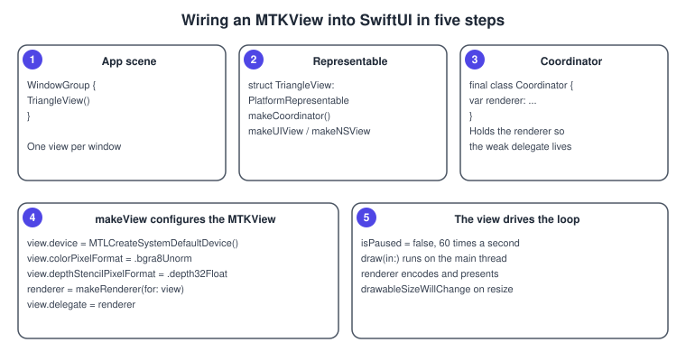
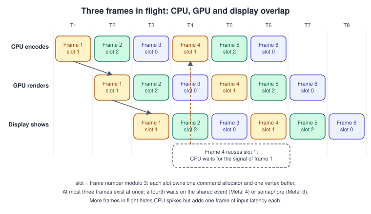

MetalKit, MTKView and SwiftUI
|
This content was generated with the assistance of AI and should be verified against the official documentation before being relied on in production. |
Metal draws into textures; something else has to turn a texture into a window on the screen. That something is a Core Animation layer
called CAMetalLayer, and MetalKit’s MTKView is the ready-made view that owns one, hands you a drawable each frame, creates the depth
and multisample textures you ask for, and calls your code at the display’s pace. This page explains what MTKView does for you and what it
does not, how to host it inside SwiftUI on every Apple platform, how to drive a CAMetalLayer yourself with CAMetalDisplayLink when you need
tighter control, and how to keep the CPU and GPU from stepping on each other’s data with frames in flight.
The facts were checked in November 2026. The versions documented are MetalKit as shipped with the 26 operating systems (the Metal 4 members
currentMTL4RenderPassDescriptor since 26.0 and residencySet since 26.4 are marked where used), CAMetalLayer and CAMetalDisplayLink
(iOS 17, macOS 14, visionOS 1.0 and later), SwiftUI’s UIViewRepresentable and NSViewRepresentable, and Swift 6. The examples run
on iOS, iPadOS, macOS and tvOS, and on visionOS inside a window; immersive rendering on visionOS uses Compositor Services instead (see
Metal on visionOS). The Metal 4 core objects used by the renderers are introduced in
Hello Triangle with Metal 4.
This is the second step of the Metal Bookshelf running example: the multiplatform SwiftUI app that hosts the MTKView. Everything later in
the section (textured book, shelf, shadows, particles) renders through the delegate described here. The general concept of a game loop and
how frame time is budgeted is in Game Loop and Frame Timing.
Where MTKView sits

MTKView is a UIView on iOS, iPadOS, tvOS and visionOS and an NSView on macOS. Behind it is a CAMetalLayer, which keeps a small pool of
drawables. A drawable (CAMetalDrawable) is a texture that is shared with the display subsystem: you render into
drawable.texture and present the drawable, and Core Animation shows it at the next refresh. Two properties of the pool shape everything
else on this page: it is small (two or three drawables), and when all of them are in use nextDrawable() blocks the calling thread, usually
until the next refresh.
What MTKView does:
-
creates and resizes the
CAMetalLayerand its drawables when the view’s size or scale changes; -
creates the depth/stencil texture and the multisample colour texture when
depthStencilPixelFormatorsampleCountask for them; -
builds a render pass descriptor (
currentRenderPassDescriptor, orcurrentMTL4RenderPassDescriptorfor Metal 4) that targets the current drawable, with a clear action and the view’sclearColor; -
calls your delegate at the rate and in the mode you choose.
What it does not do: it does not create a command queue, pipelines or buffers, it does not present the drawable (you do), and it does not keep your renderer alive.
Property reference
| Property | Default | What it does and when to change it |
|---|---|---|
|
nil |
The |
|
|
Format of the drawables. |
|
system default |
The |
|
true |
True lets Core Animation and the GPU use the most efficient layout and forbids sampling or reading the drawable texture. Set false only if you must read it in a later pass or capture it, and expect a cost. |
|
view size times the screen scale; true |
With auto-resize on, the drawable follows the view’s pixel size and the delegate hears about it in |
|
black, 1.0, 0 |
Values the generated descriptor uses for its clear load actions. For reversed-Z depth set |
|
|
Set to |
|
1 |
Set to 4 (supported on all Apple GPUs) for MSAA. The view then creates a multisample colour texture and resolves into the drawable. |
|
60 |
The rate requested from the display link. The view clamps to what the display supports (for example 120 on ProMotion displays), and the actual rate can be lower when drawing takes longer than the frame interval. |
|
false, false |
Select the drawing mode, below. |
|
false |
True synchronises presentation with Core Animation transactions, which is only needed when Metal content must change in step with UIKit or AppKit layout; it adds latency, so leave it off for games. |
|
read-only |
The drawable for the frame. Reading it may block; read it as late as possible. Returns nil if none is available. |
|
read-only |
A pass descriptor for the Metal 3 or the Metal 4 encoders (the Metal 4 property is available from 26.0). Reading either obtains the drawable implicitly. |
|
read-only (26.4) |
The residency set of the view’s drawable resources. In Metal 4, add it to your queue (or use |
|
- |
Frees the drawables and attached textures; call it when the view will be hidden for a long time to return memory. |
The three drawing modes

-
Timed updates (the default):
isPaused = falseandenableSetNeedsDisplay = false. The view callsdraw(in:)atpreferredFramesPerSecond. This is the mode for anything that animates. -
Draw on demand:
isPaused = trueandenableSetNeedsDisplay = true. The view draws only when the system or you mark it dirty withsetNeedsDisplay()(UIKit) orneedsDisplay = true(AppKit). It suits editors, viewers and tools where nothing moves between edits, and it costs no battery while idle. -
Explicit draw:
isPaused = trueandenableSetNeedsDisplay = false. You callview.draw()yourself, for example from your own display link or after a capture trigger.
Either implement MTKViewDelegate or subclass MTKView and override draw(_:), but not both.
The delegate
public protocol MTKViewDelegate: NSObjectProtocol {
func mtkView(_ view: MTKView, drawableSizeWillChange size: CGSize)
func draw(in view: MTKView)
}Source: Apple: MTKViewDelegate
-
mtkView(_:drawableSizeWillChange:)runs when the drawable’s pixel size is about to change: on the first layout, on window resize, on a rotation or a move to a screen with another scale. It is where you recompute anything that depends on the aspect ratio (the projection matrix), and resize screen-sized render targets such as a G-buffer or a shadow-map-independent post-processing texture. The size is in pixels, not points. -
draw(in:)is the frame. By default it is called on the main thread. Everything the frame needs from the view (currentDrawable, a render pass descriptor) must be read inside it.
Do not do per-frame work in mtkView(_:drawableSizeWillChange:), and do not assume it is called before the first draw(in:): call it yourself from the
renderer’s initialiser with the view’s current drawableSize, as the examples do.
Hosting an MTKView in SwiftUI
SwiftUI has no Metal view, so you wrap MTKView in a representable. The wrapper must do four things: create the view, configure it, keep
the renderer alive (the view’s delegate is a weak reference), and forward SwiftUI state to the view in the update call.

import SwiftUI
import MetalKit
#if os(macOS)
typealias PlatformRepresentable = NSViewRepresentable
#else
typealias PlatformRepresentable = UIViewRepresentable
#endif
/// A SwiftUI view that renders with Metal through an MTKView.
struct MetalView: PlatformRepresentable {
/// State that SwiftUI pushes into the view.
var isPaused = false
var framesPerSecond = 60
/// Owns the renderer: MTKView.delegate does not retain it.
final class Coordinator {
var renderer: (any MTKViewDelegate)?
}
func makeCoordinator() -> Coordinator { Coordinator() }
private func makeMetalView(context: Context) -> MTKView {
let view = MTKView()
guard let device = MTLCreateSystemDefaultDevice() else { return view }
view.device = device
view.colorPixelFormat = .bgra8Unorm
view.depthStencilPixelFormat = .invalid // set .depth32Float once a pass needs depth
view.clearColor = MTLClearColor(red: 0.08, green: 0.08, blue: 0.1, alpha: 1)
view.clearDepth = 1.0
view.sampleCount = 1
view.framebufferOnly = true
context.coordinator.renderer = makeRenderer(for: view) // from the previous page
view.delegate = context.coordinator.renderer
updateMetalView(view)
return view
}
private func updateMetalView(_ view: MTKView) {
view.isPaused = isPaused
view.preferredFramesPerSecond = framesPerSecond
}
#if os(macOS)
func makeNSView(context: Context) -> MTKView { makeMetalView(context: context) }
func updateNSView(_ view: MTKView, context: Context) { updateMetalView(view) }
#else
func makeUIView(context: Context) -> MTKView { makeMetalView(context: context) }
func updateUIView(_ view: MTKView, context: Context) { updateMetalView(view) }
#endif
}
struct ContentView: View {
@Environment(\.scenePhase) private var scenePhase
@State private var userPaused = false
var body: some View {
MetalView(isPaused: userPaused || scenePhase != .active, framesPerSecond: 60)
.ignoresSafeArea()
.overlay(alignment: .topTrailing) {
Toggle("Pause", isOn: $userPaused)
.toggleStyle(.button)
.padding()
}
}
}Source: Apple: UIViewRepresentable and NSViewRepresentable
Notes on this host:
-
Why a coordinator. A SwiftUI view is a short-lived value that SwiftUI recreates freely; the coordinator is the one object SwiftUI keeps for the lifetime of the underlying platform view, so it is the right owner of the renderer. Storing the renderer in a property of the struct would create a new renderer (and recompile pipelines) whenever SwiftUI rebuilt the value.
-
updateViewruns often. SwiftUI calls it whenever the view’s inputs change. Only set cheap properties there; never create Metal objects in it. -
Pausing. The scene phase becomes inactive or background when the app is not visible; drawing then wastes power, and iOS does not permit submitting GPU work from the background. On macOS
scenePhasealso turns inactive when the window loses focus, so a game may prefer to keep running there. -
Platforms.
UIViewRepresentableworks on iOS, iPadOS, tvOS and visionOS windows; a visionOS window shows theMTKViewas a flat surface. For stereo, immersive content use Compositor Services. -
Previews. Keep the Metal setup in the renderer, not in the view’s initialiser, so a failed device creation does not crash a preview. The code above returns a plain
MTKViewwhen no device exists.
The project setup (a multiplatform target, shared files, platform-conditional code) is described in Multiplatform Projects and Xcode Projects and Previews.
Resizing, scale and pixel formats
Points are layout units; the drawable is in pixels. On a 3x iPhone a 400-point-wide view has a 1,200-pixel-wide drawable. The delegate reports pixels, the
viewport is in pixels, and the projection’s aspect ratio is width / height of the drawable, so a renderer that uses the view’s bounds for those gets
blurry or distorted output on Retina screens.
func mtkView(_ view: MTKView, drawableSizeWillChange size: CGSize) {
aspect = Float(size.width / max(size.height, 1)) // avoid division by zero while collapsed
projection = perspective(fovy: .pi / 3, aspect: aspect, near: 0.1, far: 100)
resizeScreenSizedTargets(width: Int(size.width), height: Int(size.height))
}A size of zero in either dimension can arrive while a window is being created or collapsed; guard against it, because creating a zero-sized texture fails.
To render below native resolution, set autoResizeDrawable = false and drawableSize to the smaller size; the system scales the result to the view, which is
how fixed-resolution games and dynamic resolution scaling are done. MetalFX upscaling (see
MetalFX Upscaling and Frame Interpolation) is the higher-quality version of the same idea.
Frames in flight and triple buffering

The CPU and the GPU work in parallel, one frame apart. That is only safe if the CPU never writes a buffer the GPU is still reading. The standard solution is a ring of per-frame resources: one uniform buffer region, one command allocator (Metal 4) and any other per-frame data for each of k frames in flight, and a counter that stops the CPU from running more than k frames ahead. Using the frame number \( n \), the slot is \( n \bmod k \), and frame \( n \) may start only after frame \( n - k \) has finished on the GPU.
Choosing k:
-
k = 1 serialises the CPU and GPU: the GPU idles while the CPU encodes and the reverse. Simple, but frame time is the sum of both.
-
k = 2 is double buffering: the CPU and GPU overlap, but any CPU hiccup stalls the GPU because there is no spare frame.
-
k = 3 is triple buffering and the value Apple’s samples use. It absorbs spikes at the price of up to one extra frame of input latency.
-
Higher values only help when frames vary wildly; they cost memory and latency. The drawable pool (
maximumDrawableCount, 2 or 3) is a separate limit that also blocksnextDrawable().
A reusable ring for small per-frame structs, usable with both Metal generations:
import Metal
/// One shared buffer holding `frames` aligned copies of T, one per frame in flight.
struct UniformRing<T> {
let buffer: MTLBuffer
let slotStride: Int
let frames: Int
init?(device: MTLDevice, frames: Int = 3) {
// 256 bytes satisfies the constant-buffer offset alignment of every Apple GPU;
// the Metal Feature Set Tables list the actual minimum per family.
let aligned = (MemoryLayout<T>.stride + 255) & ~255
guard let buffer = device.makeBuffer(length: aligned * frames, options: .storageModeShared) else { return nil }
self.buffer = buffer
self.slotStride = aligned
self.frames = frames
}
/// Byte offset of the slot used by `frameNumber`.
func offset(for frameNumber: UInt64) -> Int { Int(frameNumber % UInt64(frames)) * slotStride }
/// Copies `value` into the slot for `frameNumber` and returns the GPU address of that slot.
@discardableResult
func write(_ value: T, frame frameNumber: UInt64) -> MTLGPUAddress {
let slotOffset = offset(for: frameNumber)
buffer.contents().advanced(by: slotOffset).storeBytes(of: value, as: T.self)
return buffer.gpuAddress + UInt64(slotOffset)
}
}
// Metal 3: encoder.setVertexBuffer(ring.buffer, offset: ring.offset(for: frame), index: 1)
// Metal 4: argumentTable.setAddress(ring.write(uniforms, frame: frame), index: 1)The wait itself depends on the API generation. Metal 3 renderers use a DispatchSemaphore created with the count k, waited on at the start of
draw(in:) and signalled from the command buffer’s completed handler. Metal 4 renderers use an MTLSharedEvent: the queue signals the frame number
when the frame’s commands finish and the CPU waits on frameNumber - k. Both versions are written out in
Hello Triangle with Metal 4, and the general synchronisation tools (fences, events, barriers) are in
Synchronization and Barriers.
On Apple silicon, buffers in .storageModeShared live in memory that both processors can address, so no copy is needed. Per-frame data larger
than 4 KB goes in a buffer from the ring; smaller data may use setVertexBytes or setFragmentBytes in Metal 3, which copy the bytes into the command stream. Metal 4
encoders have no equivalent, so small constants also live in a ring slot.
Driving a CAMetalLayer yourself
MTKView is a convenience. When you need to render on a non-main thread, choose the presentation timing, or avoid a UI view altogether, use a
CAMetalLayer directly. The layer’s own properties:
| Property | Effect |
|---|---|
|
As on |
|
Pixel size of the drawables. Update it when the view’s bounds or scale change; unlike |
|
True by default: the drawable texture can only be a render target. Set false to sample or blit from it. |
|
2 or 3 (the default is 3). Two lowers latency and memory, three keeps the GPU busier. |
|
True by default: |
|
On macOS, false lets drawables present without waiting for the display refresh (tearing is possible); useful for benchmarks. |
|
As on |
|
Opt in to HDR/EDR content with an extended-range pixel format and colour space. |
|
Configure the Metal Performance HUD for this layer. |
|
(26.0) The residency set of the layer’s drawables; add it to an |
A layer-backed view for both UIKit and AppKit:
import QuartzCore
import Metal
#if os(macOS)
import AppKit
final class MetalLayerView: NSView {
override init(frame: NSRect) { super.init(frame: frame); wantsLayer = true }
required init?(coder: NSCoder) { super.init(coder: coder); wantsLayer = true }
override func makeBackingLayer() -> CALayer { CAMetalLayer() }
var metalLayer: CAMetalLayer { layer as! CAMetalLayer }
}
#else
import UIKit
final class MetalLayerView: UIView {
override class var layerClass: AnyClass { CAMetalLayer.self }
var metalLayer: CAMetalLayer { layer as! CAMetalLayer }
}
#endifCAMetalDisplayLink
CADisplayLink tells you a refresh is coming. CAMetalDisplayLink (iOS 17, macOS 14, visionOS 1.0) is specialised for Metal layers: it hands you the drawable
for the update together with the time it is expected to be shown, and it lets you choose how much latency to trade for smoothness.
import QuartzCore
import Metal
/// Clears a CAMetalLayer to a colour that pulses with the presentation time.
final class DisplayLinkRenderer: NSObject, CAMetalDisplayLinkDelegate {
private let device: MTLDevice
private let queue: MTLCommandQueue
private var link: CAMetalDisplayLink?
init?() {
guard let device = MTLCreateSystemDefaultDevice(),
let queue = device.makeCommandQueue() else { return nil }
self.device = device
self.queue = queue
}
/// Call on the main thread once the layer has its final size.
func start(on layer: CAMetalLayer) {
layer.device = device
layer.pixelFormat = .bgra8Unorm
layer.framebufferOnly = true
layer.maximumDrawableCount = 3
let link = CAMetalDisplayLink(metalLayer: layer)
link.delegate = self
link.preferredFrameLatency = 2 // frames of latency the system should allow
link.preferredFrameRateRange = CAFrameRateRange(minimum: 30, maximum: 120, preferred: 60)
link.add(to: .main, forMode: .common) // callbacks arrive on this run loop
self.link = link
}
func stop() {
link?.invalidate()
link = nil
}
func metalDisplayLink(_ link: CAMetalDisplayLink, needsUpdate update: CAMetalDisplayLink.Update) {
let drawable = update.drawable
let pulse = Float(0.5 + 0.5 * sin(update.targetPresentationTimestamp))
let pass = MTLRenderPassDescriptor()
pass.colorAttachments[0].texture = drawable.texture
pass.colorAttachments[0].loadAction = .clear
pass.colorAttachments[0].storeAction = .store
pass.colorAttachments[0].clearColor = MTLClearColor(red: 0.1, green: Double(pulse) * 0.4, blue: 0.5, alpha: 1)
guard let commandBuffer = queue.makeCommandBuffer(),
let encoder = commandBuffer.makeRenderCommandEncoder(descriptor: pass) else { return }
encoder.endEncoding()
commandBuffer.present(drawable)
commandBuffer.commit()
}
}Source: Apple: CAMetalDisplayLink
Details that matter:
-
The delegate gets a
CAMetalDisplayLink.Updatewithdrawable,targetTimestampandtargetPresentationTimestamp. Use the presentation timestamp to advance animation, so motion stays smooth even when a frame is late. -
preferredFrameRateRangeis a request; the system picks a rate inside it.preferredFrameLatencyis how many frames of latency you accept; lower is more responsive but leaves less time to render. -
The callback arrives on the run loop you added the link to. Add it to a background thread’s run loop to render off the main thread.
-
isPausedstops callbacks without destroying the link;invalidate()removes it from all run loops and must be called before the layer or the renderer goes away. -
The documentation asks you to finish the queue commits for the layer before presenting the drawable, so keep encode, commit and present together in the callback.
Lifecycle, memory and power
-
Pause when invisible. Set
isPaused(or pause the display link) when the scene is inactive, minimised or covered. A paused view draws nothing and keeps its last drawable on screen. -
Release memory.
releaseDrawables()frees the drawables and attached textures; the view recreates them on the next draw. -
Frame rate. A fixed 60 or 30 frames per second saves power relative to uncapped drawing. On displays with variable refresh, ask for a range instead of a fixed rate when using
CAMetalDisplayLink. -
Direct to display. On Apple-silicon Macs, an opaque
CAMetalLayerwith RGB content in a full-screen window can be composited directly by the display hardware, which lowers latency and cost; the Metal Performance HUD shows whether presentation is direct or composited. Window setup for games is described in Performance Best Practices and Apple’s game-window article. -
Simulator. Metal runs in the iOS, tvOS and visionOS Simulators on the Mac’s GPU, but the device reports capabilities similar to an older Apple family GPU, so test features such as MSAA sample counts and the Metal 4 path on hardware.
Common mistakes
| Mistake | Result | Fix |
|---|---|---|
Renderer only referenced by |
The weak delegate is released; the view draws only the clear colour or nothing |
Keep a strong reference in the coordinator or the view model. |
Creating the renderer in |
A new device, queue and pipelines on each SwiftUI update |
Create once in |
Pipeline pixel format differs from |
Validation error, or black output |
Read |
Depth format set but no depth attachment used |
The pass works but wastes memory and bandwidth |
Leave |
Reading |
The drawable is held longer, and |
Do the CPU work first, then read the drawable and descriptor. |
Using |
Blurry or stretched output on Retina displays |
Use pixel sizes for the viewport, aspect ratio and render targets. |
Ignoring |
Crash on a force unwrap |
Skip the frame ( |
Calling Metal from |
Use-after-free style crashes in teardown |
Set |
Performance notes
-
Draw on demand for static content, timed updates at 60 Hz for most games, and a variable range with
CAMetalDisplayLinkwhere you can use it. -
Keep
framebufferOnlytrue and the pixel format at.bgra8Unorm(_srgb)unless you need HDR. -
Use
sampleCount = 4instead of higher counts; on Apple GPUs MSAA is resolved in tile memory, so it is cheap if the multisample texture can stay memoryless (see Render Passes and Load/Store Actions). -
Never block the main thread on
waitUntilCompleted; the frame-in-flight gate is the only wait a renderer needs. -
Turn on the Metal Performance HUD (Edit Scheme, Run, Diagnostics, Show Graphics Overview, or the
MTL_HUD_ENABLED=1environment variable) to see frame interval, GPU time and whether presentation is direct.
What changed recently
| Version | Change |
|---|---|
iOS 17, macOS 14 (2023) |
|
26.0 (2025) |
|
26.4 |
|
27 systems (2026) |
|
Where the books are out of date
| Source | Statement | Today |
|---|---|---|
Metal by Tutorials, 4th edition (chapters 1 and 3) |
Requires macOS 14 and Xcode 15 and assumes every Mac since 2012 runs Metal. |
Xcode 27 needs an Apple-silicon Mac on macOS 26.6 or later; Metal 4 needs an M1 or A14; |
Metal Programming Guide (Clayton), chapters 3 and 8 |
Written for Swift 4, Xcode 9 and iOS 11; OpenGL ES is presented as the default being replaced. |
OpenGL and OpenGL ES have been deprecated since iOS 12 and macOS 10.14. |